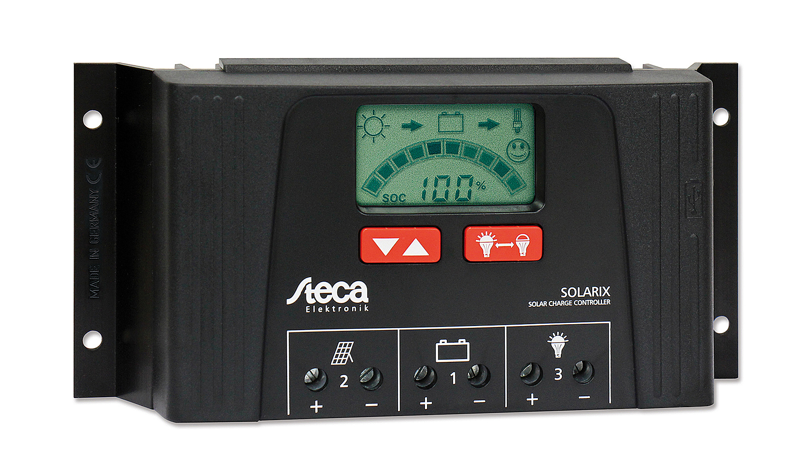

STECA SOLARIX 2525, 4040
De 175Wp 12Volt zonne-energie set zonnepaneel laadregelaar van Steca is geweldig, met 36 cellen en een Victron energy polykristallijn is het een van de beste van het moment. Het helpt enorm bij het regelen van de zonnepaneel zaken en komt samen met een solar kabel en MC4 connectoren. Het is super simpel in gebruik en zo geïnstalleerd vanwege het nieuwe instalatie systeem. voor extra informatie klik hier of bel ons.
